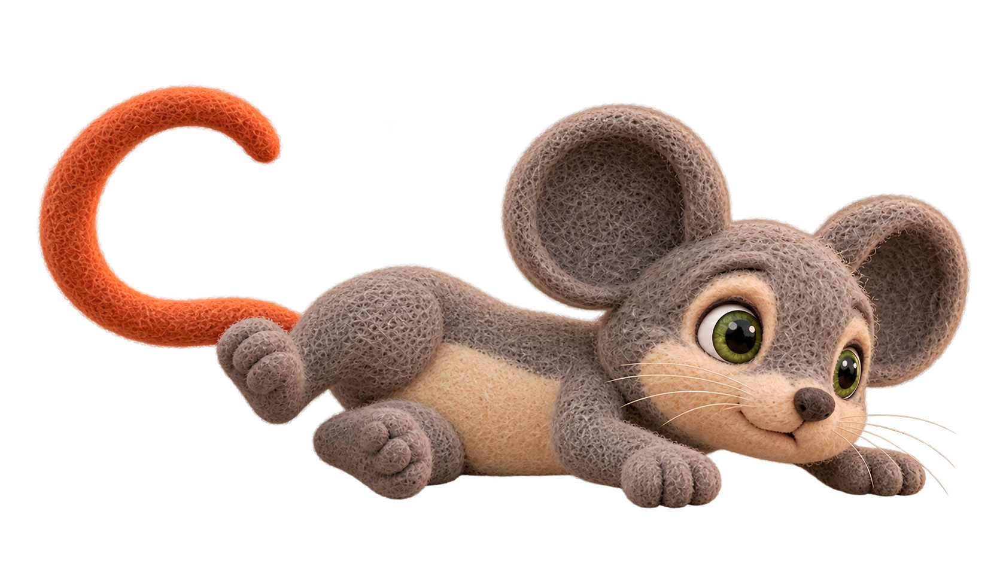
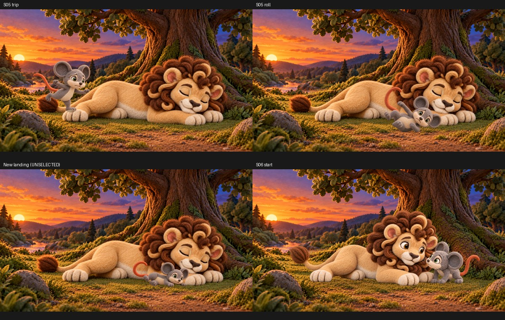

One generated transparent pose and one CPU composition. No pose or scene approval is implied. The mouth reads slightly cheerful; contact shadow and Leo foreground depth need review.


Technical observations · Scene receipt · Generation receipt